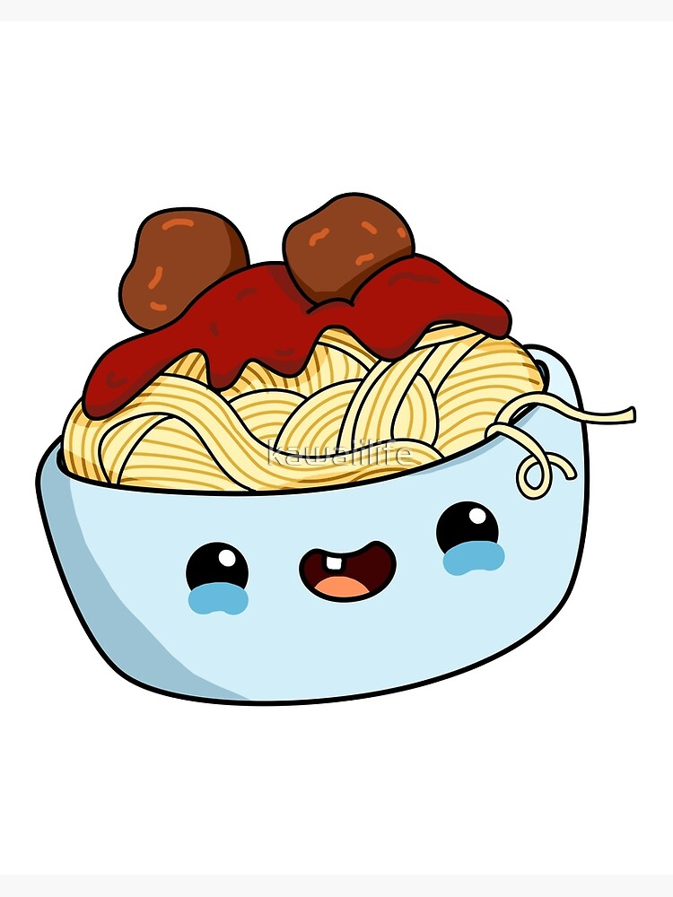

Fettucini and Herlom Uranus Tomatoes

Ingredients
- 200g of Fettucini, slave made
- 100g diced Herlom tomatoes from the lexar region of Uranus,
canned is fine
- 250ml of "mac-bot's famous red sauce"
- Parmeganio Rage-e-ano
- 50ml Cold Pressed Olive Oil
Method
- In a sauce pan, bring the red sauce to a low simmer.
- Bring a 25L pot of salted water to a rolling boil, cook
fettucini for 2 -3 min, strain.
- Add the the noodles to the red sauce immediatley!!
Remove from heat and add in diced tomatoes. Mount with
olive oil.
- Garnish with Parmeganio and enjoy!
Go Back!